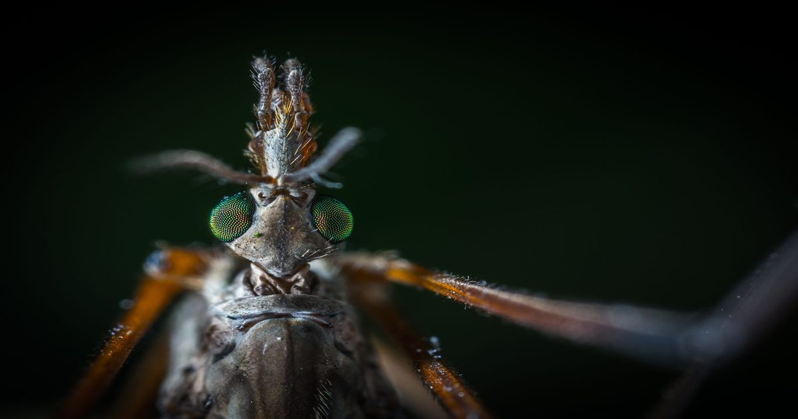

Биологи показали, что происходит под кожей во время укуса малярийного комара
Ученым впервые удалось в деталях проследить за тем, что происходит над кожей и под ней во время укуса малярийного комара.
С помощью высокоскоростной съемки и чувствительных микродатчиков исследователи зафиксировали сложную координацию движений насекомого, а также сравнили его поведение с другими видами и генетически измененными комарами.